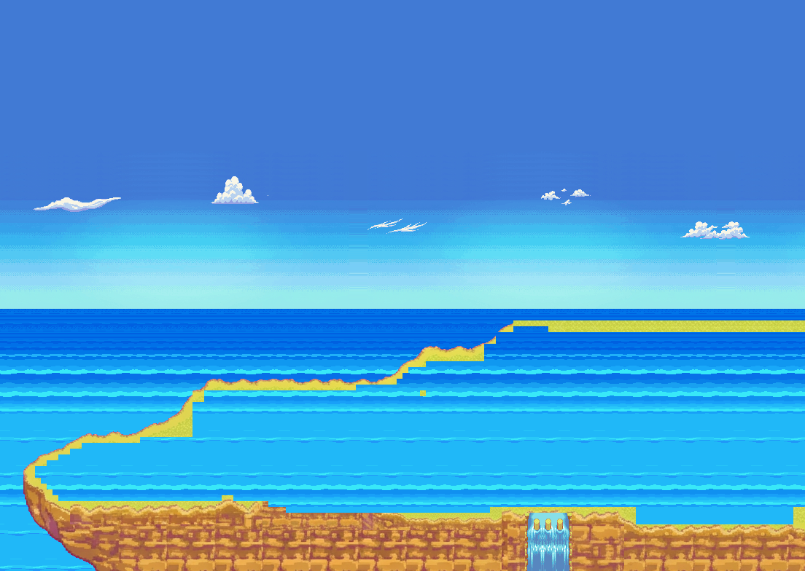
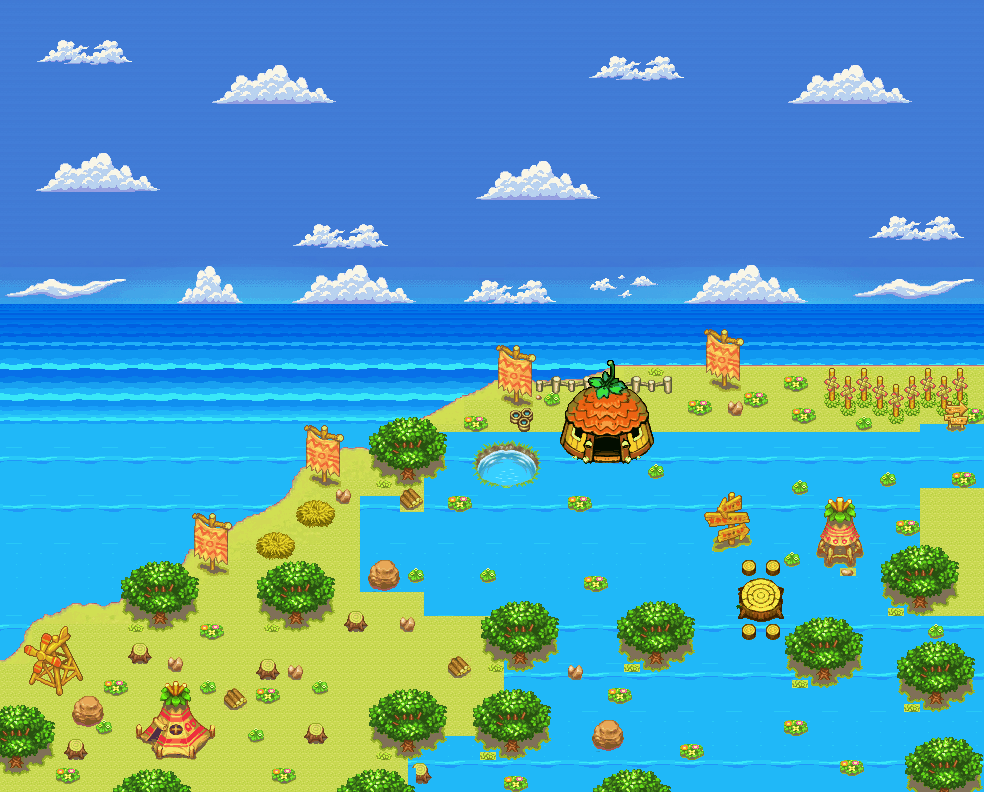
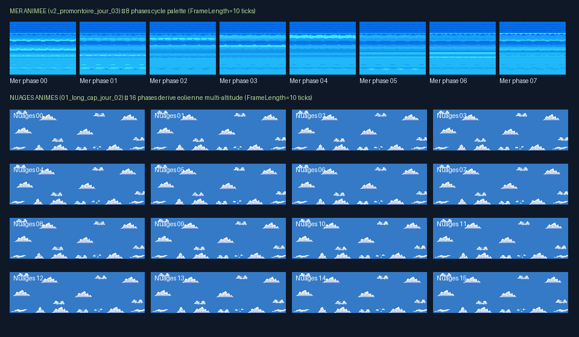

Animation complète des calques de Mer (`v2_promontoire_jour_03.tile`, 8 phases canoniques, `FrameLength = 10` ticks = 1,33 s),
de Nuages (`01_long_cap_jour_02.tile`, 16 phases de dérive éolienne multi-altitude sans saut de boucle, `FrameLength = 10` ticks = 2,67 s)
et des Cascades/Eaux Métano (`Metano_Town_Animation_Tileset.tile`, 3 à 4 phases natives, `FrameLength = 10`)
pour cliffnordouesttest1.rsground (138×98 cases = 1104×784 px) et cliffdaytest.rsground (123×99 cases = 984×792 px).
Calques : 00 Ciel (00_ciel) → 01 Cloud/nuage (16 phases) (556 cases animées) →
02 Mer animee (8 phases) (6 209 cases animées) → 03 Falaises et promontoire → 04 Chemins et cascade animee (80 cases cascade 4 phases).
Calques : 00 Ciel (00_ciel) → 01 Mer animee (8 phases) (7 503 cases animées) →
02 Falaises et relief → 03 Objets et vegetation → 04 Cascades et eau animee (520 cases nettoyées) →
Cloud/nuage (16 phases) (774 cases animées, 600 tuiles phase 0 préservées) → 06 Objets Decor (ex-Cloud/nuage) (325 décors isolés).



| Carte `.rsground` | Dimensions | Mer animée (`v2_promontoire_jour_03`) | Nuages animés (`01_long_cap_jour_02`) | Cascades Métano (`Metano_Town_Animation_Tileset`) | Décors isolés |
|---|---|---|---|---|---|
cliffnordouesttest1.rsground |
138 × 98 cases (1104 × 784 px) |
6 209 cases × 8 phases (FrameLength = 10, cycle 80 ticks) |
556 cases × 16 phases sur 3 bandes d'altitude (FrameLength = 10, cycle 160 ticks) |
80 cases (`x=90..97, y=88..97`) passées de 1 frame statique à 4 phases (`dx=9, FrameLength=10`) | Ciel haut (`y=0..25`) complété et dégradé harmonisé avec `cliffdaytest` |
cliffdaytest.rsground |
123 × 99 cases (984 × 792 px) |
7 503 cases × 8 phases (FrameLength = 10, cycle 80 ticks) |
774 cases × 16 phases (100 % des 600 tuiles d'origine conservées en phase 0) | 520 cases nettoyées (0 frame vide `""`, phases intermédiaires `dx=4/6/8/9` restaurées, `FrameLength=10`) | 325 tuiles d'objets extraites de `Cloud/nuage` vers le calque `06 Objets Decor` |
python renders/cliff_nord_jour_anime_v1/INSTALLER.py "CHEMIN/VERS/PMDO/MODS/VOTRE_MOD"